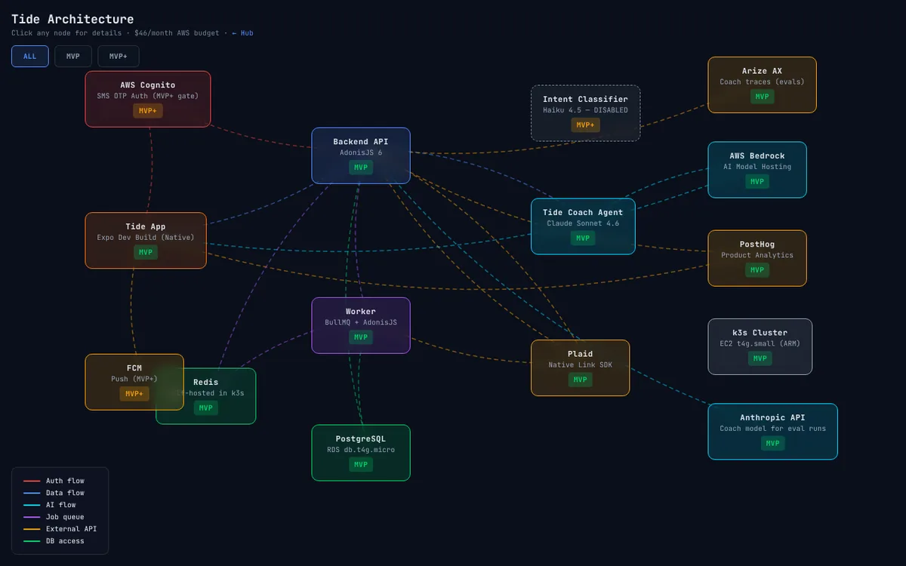
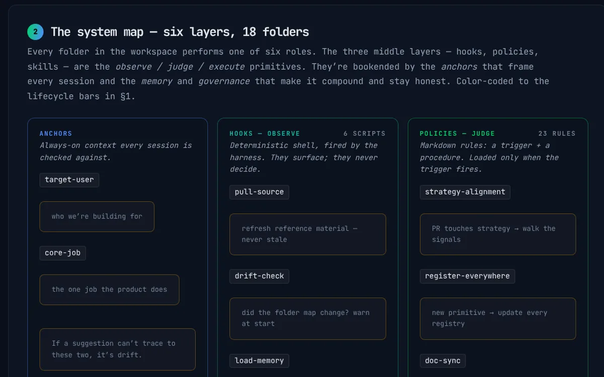

For ~12 years I've shipped consumer products at scale — at Zillow, Wayfair, Ahold Delhaize, and Whirlpool. Today I build AI-native products end-to-end: the app, the AI pipeline, the data model, and the evals.

A mobile-first money app built around one question: what's actually safe to spend? An AI coach on Claude and AWS Bedrock, payday-aware math, and docs where every data flow doubles as the spec.
Explore the system docs →
Hooks observe, policies judge, skills execute: an operating system for product decisions, so a team and its AI agents decide from cited evidence.
Explore the case study →Earlier · Bangalore, 2009–2013. Senior Associate at Burson-Marsteller (PR for Flipkart, a Walmart company) and Systems Engineer at Tata Consultancy Services (Bank of America).
Start with the customer and work backwards. Continuous discovery — interviews plus real behavior — over a spec written once and frozen.
Roadmaps anchored to a North Star and business impact — activation, retention, conversion — not a feature checklist.
Claude & AWS Bedrock pipelines, agent tooling, prompt and structured-output design — turned into features users actually feel.
Dimensions, fixtures, ground-truth, judge scoring. Evals are the new success metric — AI quality you can actually move.
Every interaction is a signal. Corrections and usage feed back so the model gets sharper the more the product is used.
A pace of about 5.1 contributions a day since January 1, with about 6 in 10 commits co-authored with AI.
I'm open to AI product roles where product and engineering sit close together. If that sounds like something you're working on, I'd be glad to chat.